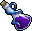
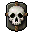
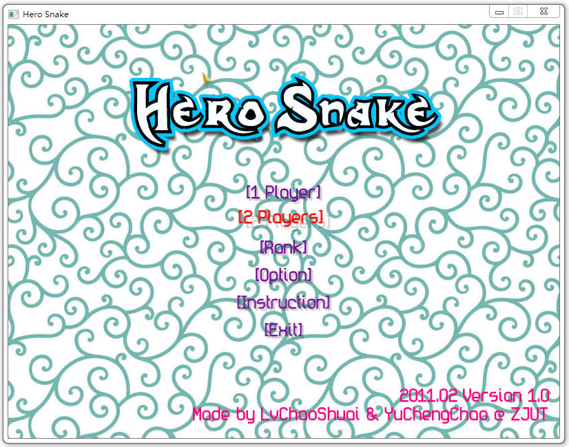
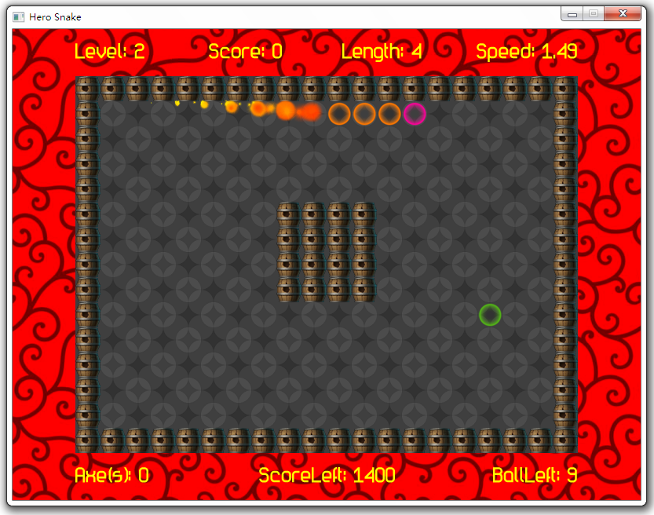
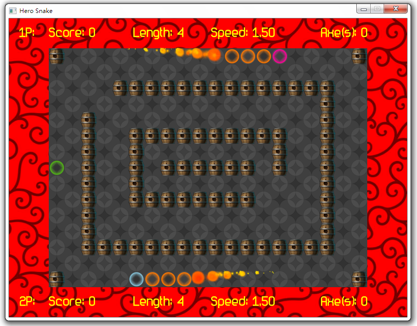

死月出品：Hero Snake 英雄蛇
注：备份到这篇日志的时候，感觉眼睛进了什么奇怪的东西。（才……才不是眼泪呢，那一定是沙子！(;´༎ຶД༎ຶ`)
主要引起感伤的还是这首轩辕剑的 BGM 吧。因为 Hero Snake 的BGM就是这个。
这篇文章原文是在 2011年5月1日 发的。游戏是跟 MatRush 在2011年寒假一起写的，虽然是我边教边写的。呵呵，转眼间三年过去了。
想当年我还是那么执着于游戏行业，现在纠结于到底要从事游戏行业还是互联网呢？半年真的能改变很多，要是我当时没有去汽族网实习，也许现在并不会有那么大的改变吧。
自从被 @朴大 刷了之后，我又开始着重考虑了。是不是我玩互联网只是觉得新鲜好玩而已呢？毕竟我是半路出家的，虽然有着十来年的
Web经历，但那都是小打小闹哇。还记得小学的时候买的第一本电脑书——《在网上安个家》，到现在还记得那个时候捧着书的激动心情。我是不是有点偏离了自己本身的轨道呢？总之还是在这两块领域犹豫不决。
废话有点扯远了，还是把文章从 Capture 备份回来再说吧。
这是一款正宗基于HGE的小游戏，算是我做的游戏中自己比较满意的小游戏吧。
幕后故事是这样的：MatRush寒假找我一起做游戏，因为他们学校弄了一个蛋疼的游戏制作比赛。然后命题是贪吃蛇，于是我们加了一点自己的小创意，给他讲解了一些HGE的基础之后，就写了这个游戏了。然后因为我们都比较喜欢轩辕剑，于是BGM就是轩辕剑的《永远的三个人的快乐时光》，由于MatRush比较喜欢MapleStory，便有了素材是那些像素画面。
首先这个游戏有两种模式：单人模式和双人模式。
关於单人模式，这是一个闯关型模式，大家在每一关必须通过吃道具获得一定的分数以及吃圈圈获得一定圈圈数才能开启通往下一关的门，默认一共20关，可以自己编辑关卡，这是后话。下面是几种道具的解说：
开山斧：捡到这货随机获得1~3个斧头并且附赠100分数。斧头的作用是能破开木桶，安全通过，一个斧头用一次。斧头数在左下角的Axe(s)后面。
命运之剪：捡到这个之后获得100分并且给你断掉一个尾巴以降低难度。
降速器：因为你每吃一个圈圈会增加一定速度，而这个降速器是降低你的速度让你容易些。并且附赠100分。

药水：药水是装饰变色用的，其实是送分的。前四种药水100分，紫色的300分。

骷髅头：想死的话就碰碰它试试。
传送门：遇到这货就说明你功德圆满了。恭喜，可以通过它前往下一关。

接下去是双人模式。双人模式因为当初设想有些问题，所以实现起来仅仅是简单的双人走啊走，看谁碰到谁谁就输。在双人模式中，先要选择一张对战地图，然后开始双人走啊走啊走。
然后Rank是排行榜，Option是游戏的一些选项，Introduction是游戏介绍，这个介绍有些蛋疼，最后不用说Exit就是退出了。
下面是关于地图编辑器的说明：
首先在游戏目录小有一个config.ini文件，是一些游戏设置。其中levelnum是游戏关卡数。注意这个数字必须要跟地图数量一致或者小于它，否则会因为找不到之后的地图而出错。地图就存在data里，命名方式是mapX.txt，从0开始。地图编辑器则在MapEditor文件夹下。操作很简单，说明都在编辑器下方的文字上，就几个快捷键。可以用鼠标操作也可以用上下左右控制方向。
最后，预祝大家玩得愉快。附上下载地址和几张预览图吧：


